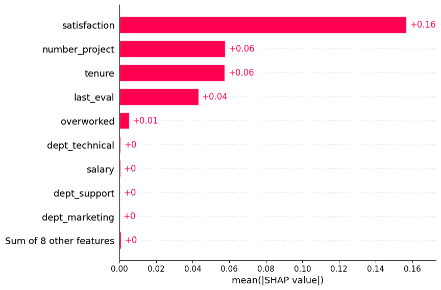
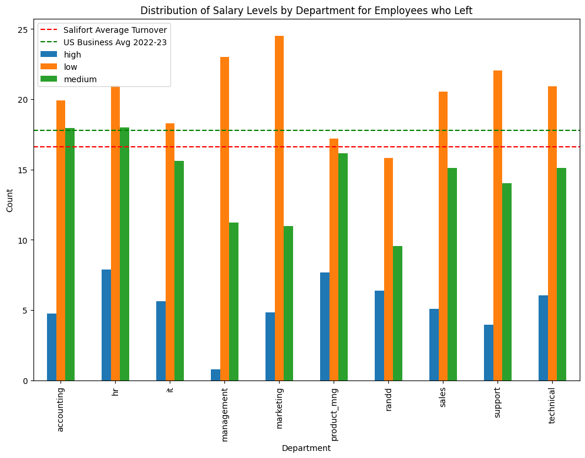

| Document Title | Salifort Motors - Executive Summary |
| Author | Rod Slater |
| Version | 1.0 |
| Created | 01-11-2023 |
| Modified | 16-11-2023 |
| Client Name | Salifort Motors |
| Client Contact | Mr HR Team |
| Client Email | hr@salifortmotors.it |
| Client Project | HR Team Data Driven Solutions from Machine Learning Models |
Data provided by the Salifort team was analysed to determine key factors in employees leaving the company. the data was analysed and a machine learning model built and used to identify the key reasons for employees leaving and predict employees who would leave.
Exploratory Data Analysis was carried out on the provided data and key features of employees who left (the predictor) were identified during the ML modelling phase.

The Machine Learning model was used to predict employees at risk of leaving:
Using the model, and applying to current employees, we can see there are 67 current employees flagged as above low risk, of these 33 are medium risk above the 70% threshold and 12 are high risk employees.
| probabilities > high_risk_threshold 90% | |
|---|---|
| Count of employees with leave probability above 90% | 12 |
| Percentage of employees with leave probability above 90% | 0.13% | probabilities > medium_risk_threshold 70% |
| Count of employees with leave probability above 70% | 33 |
| Percentage of employees with leave probability above 70% | 0.36% |
| probabilities > predict_risk_threshold 50% | |
| Count of employees with leave probability above 50% | 67 |
| Percentage of employees with leave probability above 50% | 0.72% |
If we apply the model to employees who have already left, effectively testing the model against known data, we can see that 72% of employees who left would have been flagged by the ML model as at high risk, and action perhaps could have been taken before the inevitable. If we lower the risk threshold threshold to medium risk at 70%, then over 90% of these employees would have been flagged and if we look to those flagged above low risk at 50%, 91% of employees would have been flagged.
To put some perspective around this, the level of accuracy demonstrated by the model is significantly better than a random guess.
| probabilities > high_risk_threshold 90% | |
|---|---|
| Count of employees with leave probability above 90% | 1360 |
| Percentage of employees with leave probability above 90% | 72.26% |
| probabilities > medium_risk_threshold 70% | |
| Count of employees with leave probability above 70% | 1712 |
| Percentage of employees with leave probability above 70% | 90.97% |
| probabilities > predict_risk_threshold 50% | |
| Count of employees with leave probability above 50% | 1731 |
| Percentage of employees with leave probability above 50% | 91.98% |
| % of employees left that were predicted | |
| XGBoost Predicted to leave > (50% )/ % of employees who left | 86.94 % |
In the year 2020, industries across the board experienced a significant surge in turnover rates. This trend was largely attributed to the challenges posed by the pandemic, leading many companies to adapt to closures, downsizing, or the shift to remote work.
Despite the gradual return to normalcy, employees continue to depart for new opportunities at an unprecedented rate. Employee turnover exacts a considerable cost, with the hiring process alone accounting for at least half of the departing employee's annual salary. Moreover, as more individuals leave, the company culture may suffer, placing additional stress on remaining staff.
While some turnover is inevitable, aiming for a 10% turnover rate is prudent. According to the Society for Human Resource Management (SHRM), most companies currently hover around a 20% turnover rate. The ideal rate depends on various factors, including industry and internal promotion rates.

It is imperative to acknowledge that employees are individuals, not mere figures or resources. Creating a culture that fosters a sense of value, career development, visibility, and care is crucial to encouraging employee retention.
To cultivate such a culture, consider implementing the following tips into your retention strategy:
88% of individuals consider professional development and career growth as crucial when evaluating potential employers. Investing in the programs is essential. This commitment not only cultivates skilled and confident employees but also demonstrates a genuine concern for their ongoing improvement and success.
Competitive and fair salaries for every position within the company are pivotal to any retention strategy. Ensure that leaders seriously consider requests for raises. Additionally, creative benefits such as health insurance, vision and dental coverage, and unique perks like free snacks or wellness programs can significantly contribute to employee satisfaction.
Recognizing employee commitment and tenure is an essential aspect of any organization. It helps to show appreciation and gratitude towards employees for their dedication, which in turn makes them feel more valued and satisfied within their position.
Long service recognition is a crucial component of any employee recognition program. It celebrates and acknowledges the commitment and loyalty of employees who have dedicated their professional lives to a company. Recognizing staff's long-term commitment to an organization is one of the most important forms of recognition within a business.
Celebrating employees' achievements and milestones is essential to promoting employee engagement and creating a positive workplace culture.
Recognizing employee excellence is another crucial aspect of any organization. It helps to show appreciation and gratitude towards employees for their hard work, which in turn makes them feel more valued and satisfied within their position.
Employee recognition programs can take many forms, including bonuses, promotions, and public recognition. Some organizations may also offer non-monetary rewards such as extra vacation days, flexible work hours, or gift cards. The most important thing is to ensure that the reward is meaningful and relevant to the employee's interests and needs.
Employees need to perceive that the company genuinely cares for them. Offering flexibility in work arrangements, such as unlimited PTO, flexible hours, or remote work options, can cater to the diverse needs of your workforce. Implementing recognition programs, such as service awards and wellness initiatives, reinforces a culture of appreciation and significantly reduces turnover.
Implementing flexible working arrangements can offer numerous benefits to employers. Firstly, it fosters a positive work culture by demonstrating trust in employees' ability to manage their tasks independently. This autonomy often leads to increased job satisfaction, which, in turn, can boost overall productivity and creativity.
Flexible working also facilitates better work-life balance, reducing burnout and improving employee well-being. This, in the long run, contributes to lower turnover rates and recruitment costs, as satisfied employees are more likely to stay with their current employer. Moreover, offering flexibility can attract a wider pool of talent, including individuals who may not be able to commit to traditional 9-to-5 schedules. Embracing flexibility reflects a progressive and adaptive approach to work, enhancing the employer's reputation and making the company more appealing to potential employees.
Ultimately, by accommodating diverse work arrangements, employers can create a more resilient and agile workforce, better equipped to navigate the dynamic challenges of the modern business landscape.
In a landscape where employees have abundant employment options, investing time, effort, and resources in making them feel valued as integral team members is crucial.
By:
Salifort Motors can demonstrate loyalty to its employees, fostering reciprocal loyalty to the organization.
Having detailed all of this, it's crucial to keep in mind the principle that “correlation does not imply causation.” While ML models offer powerful predictive capabilities based on data patterns, they inherently lack the depth to discern causation in complex human behaviors.
Imagine a scenario where it is observed that there is a strong correlation between the usage of office snacks and increased employee engagement. It would be a mistake to assume that providing more snacks directly boosts engagement. The underlying causation might be a positive workplace culture that encourages interaction and collaboration, leading to both higher snack consumption and increased engagement.
Similarly, with employee turnover prediction, the model can identify patterns and correlations, but it's essential to remember that correlation alone doesn't unveil the reasons behind an employee's decision to leave. It might hint at factors such as work dissatisfaction, but it won't reveal the underlying causes.
It is essential that building strong relationships, competitive compensation, and genuine care for employees remains paramount. While ML models can enhance the understanding, they cannot replace the human touch in addressing individual concerns and motivations. A well-compensated and engaged workforce is not merely a statistical outcome; it reflects the tangible efforts that must be invested in creating a positive work environment.
As you integrate ML into your HR strategies, it should be viewed as a complementary tool that works hand-in-hand with existing and new practices. The commitment to fostering a workplace where employees feel valued and heard will always be at the core of success in retaining top talent.
With additional data we can provide a more detailed analysis and more accurate model. Additional data that would help:
Since all of these pieces of information can have a considerable
bearing on analysis of left = 1 or not we have to
acknowledge that we are working with limited dataset and can only
provide guideline insights, therefore certain assumptions have been made
to support those insights.
In reality, further investigation with the client's domain experts would hopefully enable us to source this information. Where assumptions have been made, these are clearly identified.